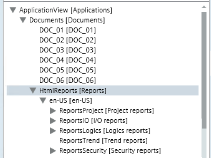

HTML Reports
You can get detailed data about the project configuration through the following HTML reports:
These reports are located in the Application View under the Documents folder; a subfolder is available for each language of the project.

Refresh HTML Reports Data
- System Browser is in Application View.
- Select Applications > Documents > Reports.
- In the Operation/Extended Operation tab, next to the Refresh property, click one of the following:
- By name (system object name)
- By description (system object description)
Back up HTML Reports Data
- System Browser is in Application View.
- Select Applications > Documents > Reports.
- In the Operation/Extended Operation tab, next to the Refresh property, click Backup.
- Backups of all the HTML reports are saved in a timestamp folder in the default report folder at the following destination: C:/GMSProjects/[Project]/data/Reporting/Reports/HTMLReport/[YYYYMMDD-hhmm]/[project language].
Modify Report Backup Folder
- System Browser is in Management View.
- Select Project > Management System > Servers > Main Server > Report Manager > Report Default Folder.
- In the Operation/Extended Operation tab, next to the Location property, enter the wanted destination folder, and click Set.
NOTE: As the default report folder might be used by other applications, to avoid issues, use the relative path to the project and not the full path to a directory.
For example, if the report must be routed to [Installation Drive]:\[Installation Folder]\[Project Name]\data\Reporting\Reports, you must specify the relative path in the Location field as follows: data\Reporting\Reports.